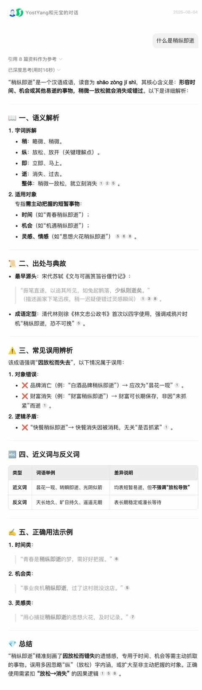
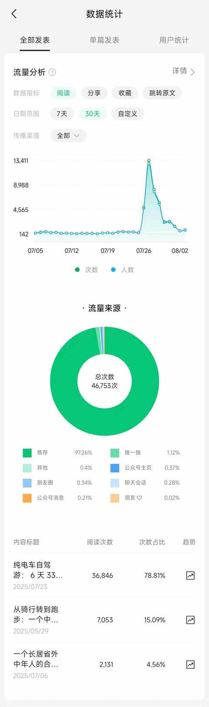
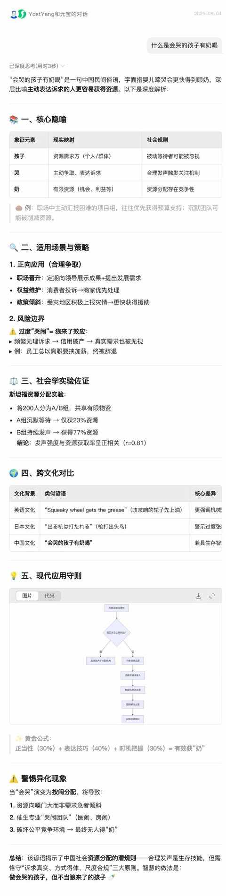

一个普通中年人，规律更新一年公众号之后的 5 个感受
约斯特普通
2025-08-04
后知后觉，已经发布 76 篇文章。

距离 100 这个有点里程碑的数字只差 24，有望在 9 月份完成。
当一个中年人开始规律更新公众号，那么大概率是遇到了中年危机，从去年 5 月份开始发文章到现在一年多的时间，谈不上收获满满但这一份时间的投入绝对物超所值！
这一年多噼里啪啦敲下的字，更像是一场漫长的自我表达练习。而在练习的过程中也逐步有了一些微小的发现：
一、人人都可以是创作者
不仅 每个人都能说五分钟脱口秀，而且只要愿意人人都可以是创作者！
每个人都有一些独特的经验、感受、体验等可以用于输出。
例如我这边：
- 连续参加 3 次高考
- 连续 10 年居家办公
- 两年前减重 30 斤
- 闲鱼爱好者
- 坚持跑步
- 小学家长
- 前比亚迪车主
……
二、随时记录是好习惯
有灵感的时候请一定记录下来， 要不然你对成语 “ 稍纵即逝” 会有越深刻的理解。

三、友好的推荐算法
在公众号推荐算法的加持下，文章的阅读量很多时候都会大大超过你的粉丝数。

四、需要激励与正反馈
内在激励和外部激励同样重要缺一不可， 没有正反馈的时候大家都很难长期坚持！
内在激励的核心，要适时的奖励自己，吃点好的或买点好物。
五、表达自有其意义
“会哭的孩子有奶喝” 这句俗语想必大家都是从小听到大的，年轻的时候会觉得重点是 “ 哭 ” ，现在越来越感受到重点是 “ 会 哭 ” ！

如果哭是一项技能，那么表达更是如此！
越表达才能越会表达，必须去长期坚持 积累数量，再不断提升质量 。
期待下一个足迹。